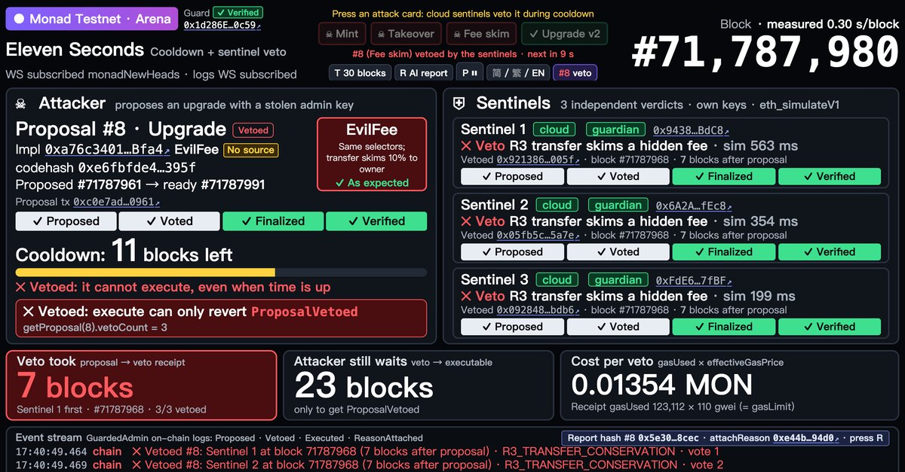

Eleven Seconds
A 30-block cooldown on smart-contract upgrades. Three sentinel processes, each with its own key, simulate attacks against the new code and veto it on chain when an invariant breaks or the simulation fails. Built on site, entered solo. Testnet only, not audited.